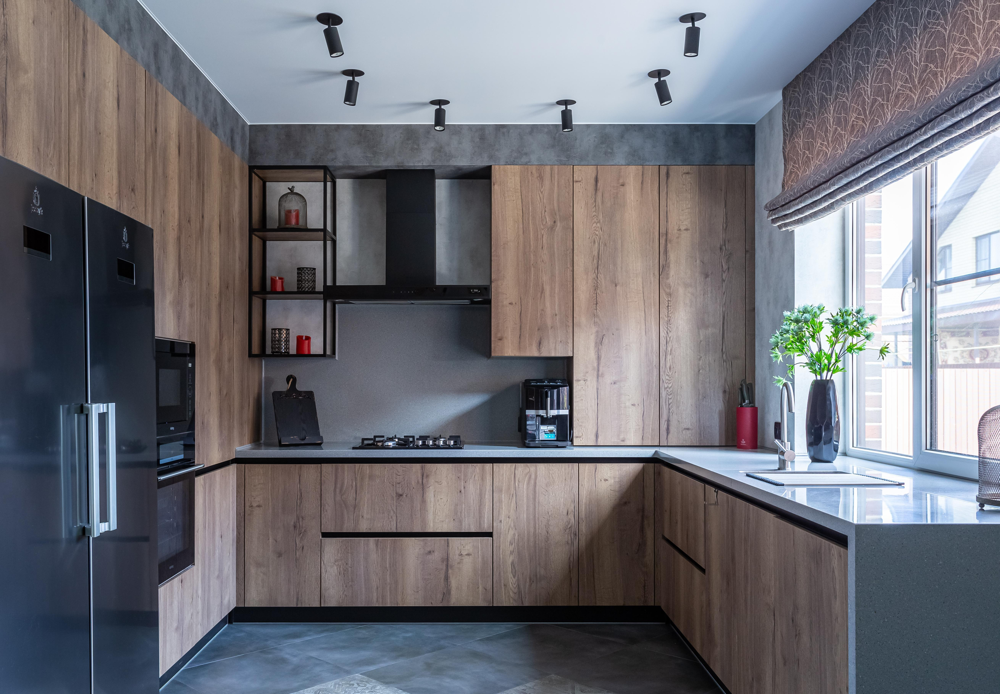

КУХНИ И МЕБЕЛЬ ПО ВАШИМ РАЗМЕРАМКухня под ключ.
Кухня под ключ.
Для вашего дома.
Собственное производство в Краснодаре. Подготовим проект, изготовим мебель и установим её по вашим размерам.
Рассчитать мою кухню
ПРОЕКТ, МАТЕРИАЛЫ И ДЕТАЛИОдна кухня.
Одна кухня.
Детали крупным планом.
П-образная планировка, рабочая поверхность у окна и хранение для техники и посуды. На примере кухни «Дриада» показываем, как может быть организовано пространство.
Обсудить мой проект